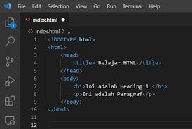

HTML (HyperText Markup Language) adalah bahasa standar untuk membuat
halaman web. HTML bekerja dengan menggunakan elemen-elemen yang ditulis
dalam bentuk tag, seperti <html>,
<head>, dan <body>, yang membentuk
struktur dasar sebuah halaman web. Tag <h1> hingga
<h6> digunakan untuk judul,
<p> untuk paragraf, <a> untuk
tautan, serta <img> untuk menampilkan gambar.
Selain itu, HTML juga mendukung tabel dengan tag
<table>, daftar dengan <ul> dan
<ol>, serta formulir dengan
<form>. HTML dapat dikombinasikan dengan CSS untuk
mengatur tampilan dan dengan JavaScript untuk menambahkan fungsionalitas
interaktif pada halaman web.
Versi terbaru, HTML5, memperkenalkan elemen semantik seperti
<header>, <article>,
<section>, dan <footer>, yang
membantu dalam mengorganisasi konten dengan lebih baik. HTML5 juga
mendukung penyematan media seperti audio dan video menggunakan tag
<audio> dan <video> tanpa
memerlukan plugin tambahan.
Selain elemen semantik, HTML5 mendukung teknologi baru seperti Web Storage, Canvas untuk grafik, dan API Geolocation. Dengan perkembangan ini, HTML menjadi lebih fleksibel dan mampu menciptakan pengalaman pengguna yang lebih dinamis di berbagai perangkat, termasuk desktop dan mobile.
Berikut ini ialah contoh file HTML
